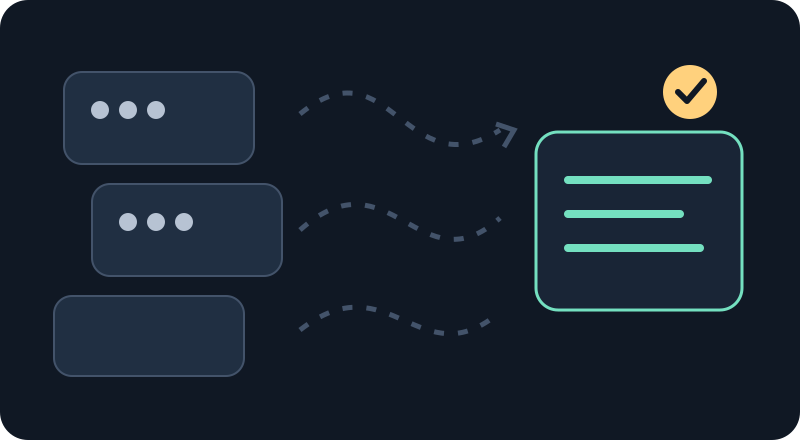

처음 만나는 Hermes
복잡한 일을
맡기고, 확인하고,
다시 이어가는 시스템
Hermes는 언어 모델이 도구를 사용해 일을 수행하도록 돕는 에이전트 환경입니다. 이 강의에서는 지휘 에이전트(오케스트레이터)와 작업 에이전트(워커)가 왜 필요하고, 네 축이 한 작업 안에서 어떻게 연결되는지 먼저 살펴봅니다.
- 사람의 요청
- 지휘 에이전트 · 계획하고 요청서 작성
- 작업 에이전트 · 맡은 범위 수행
- 작업 흐름 · 조사 → 계획 → 승인 → 실행 → 검증
- 필요한 지식 참조
- 산출물 만들기 (예: 이미지)
- 실제 산출물 검증
- 결과 보고
- 사람에게 전달
화면의 식별자와 흐름은 모두 교육용 합성 데이터입니다.
사람의 요청목표와 완료 조건
↓
지휘 에이전트계획 · 경계 · 위임(오케스트레이터)
↓
↓
결과 확인상태와 산출물을 직접 읽기
01 · 왜 필요한가
언어 모델은 유능하지만, 혼자서는 모든 일을 보장하지 못합니다

대화만으로 오래 걸리는 일을 진행하면 중간에 맥락이 끊기거나, 실패한 시도와 새 시도가 섞일 수 있습니다. 도구가 성공했다고 말해도 결과 파일이 맞는지 별도로 확인해야 합니다. 그래서 목표, 권한, 실행, 증거를 구분하고 다음 사람이 확인할 수 있게 남깁니다.
맥락은 제한적입니다
긴 작업은 한 번의 대화에 모두 담기 어렵습니다. 파일로 된 요청과 결과는 작업을 이어갈 수 있는 접점입니다.
실행과 판단은 다릅니다
계획을 정하는 역할과 실제 파일을 바꾸는 역할을 나누면 책임과 승인 경계를 드러낼 수 있습니다.
보고는 증거가 아닙니다
완료 보고와 실제 산출물을 대조해야 결과가 요청을 충족하는지 알 수 있습니다.
02 · 네 축 지도
네 축은 서로 다른 질문에 답하면서 한 작업을 이어줍니다
아래 흐름은 시스템의 책임을 보여주는 개념도입니다. 실행 가능한 세부 계약이나 현재 내부 동작을 모두 나타내는 것은 아닙니다.
지휘와 작업 에이전트
누가 목표를 정하고, 누가 실행하며, 누가 결과를 읽을까요?
요청 → 위임 → 확인작업 흐름
어떤 단계에서 검토·승인이 필요하고, 무엇이 완료를 뜻할까요?
조사 → 설계 → 실행 → 검증지식
필요한 근거를 어디서 찾고, 원본과 최신 상태를 어떻게 확인할까요?
복구된 실물 확인 뒤 상세 학습이미지 생성
요청을 적절한 카탈로그와 프롬프트, 실행 환경, 결과 확인으로 어떻게 잇나요?
의도 → 선택 → 구성 → 생성·검사지식 축은 전체 지도에 자리만 표시합니다. 상세 설명은 실제 시스템을 복구하고 근거를 대조한 다음에 다룹니다.
03 · 한 요청이 네 축을 지나는 모습
각 축은 한 번씩 등장하고, 결과 확인에서 다시 만납니다
합성 요청교육용 포스터 한 장 만들기
→
역할 나누기범위 결정 · 실행 위임
→
단계 확인조건 검토 · 승인 경계 준수
→
생성 파이프라인선택 · 프롬프트 · 실행
→
실물 확인파일·상태·요구사항 대조
예시는 시스템 자체의 흐름을 보여주는 합성 상황입니다. 이 도식은 개념 설명이며, 특정 제품 API나 현행 실행 명령을 약속하지 않습니다.
04 · 학습 경로
큰 그림에서 시작해, 필요한 세부로 이동합니다
- 강의 00 · 전체 그림Hermes와 네 축의 관계를 파악합니다.
- 강의 01 · 지휘 에이전트와 작업 에이전트요청을 맡기고 결과를 확인하는 이유를 배웁니다.
- 강의 02–04 · 나머지 축작업 흐름과 이미지 생성을 개념 수준에서 살펴봅니다. 지식 축 세부는 복구 확인 전 보류합니다.
- 위키와 실습환경 준비, 계약, 합성 예제 실행을 필요한 순간에 찾아봅니다.